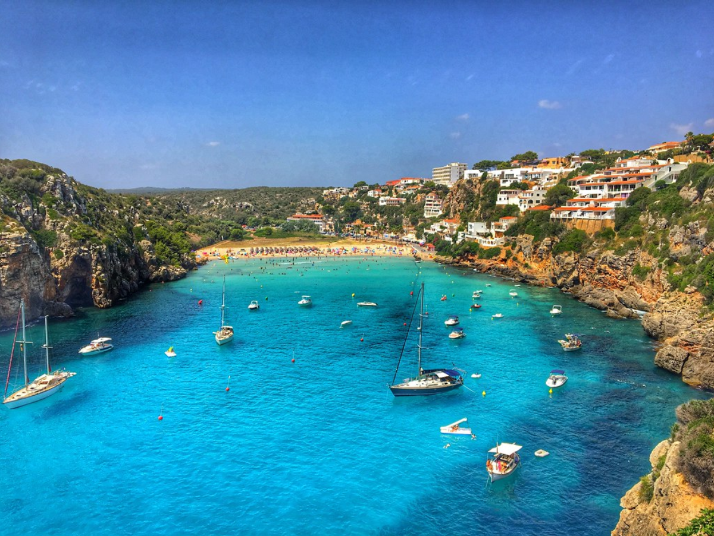

Cala en Porter está a 11 kilómetros de Alaior, situada entre los morros Esclafat y Ponent, así como junto a la urbanización homónima. Al oeste de Cala en Porter se halla Talaia de ses Penyes, construida sobre unos cantiles de 68 metros de altura.
Un enorme entrante de mar sinuoso y la desembocadura de Torrent de Cala en Porter forman al tocar tierra firme una playa en forma de concha y una zona húmeda en su parte trasera. Esta franja de litoral también se caracteriza por tener dimensiones medianas, pendiente suave y afluencia alta de bañistas locales y turistas.

Este rincón costero se encuentra flanqueado por verticales acantilados altos, cuyas peñas del margen derecho están coronados de vegetación y las del flanco izquierdo de viviendas residenciales. Destacando casi en su punta Cova d'en Xoroi, hoy en día una discoteca con vistas panorámicas espectaculares y, en el pasado, según cuenta la leyenda, habitada por un moro que le faltaba una oreja.
Las condiciones marinas y subacuáticas de esta manga de mar desaconsejan el fondeo de embarcaciones con mal tiempo y por la noche, pues se halla desprotegida de los vientos de componente sur y es poca profunda. Si se realiza esta maniobra, se recomienda llevarla a cabo cerca de la playa, con una hondura de tres metros.
El acceso por carretera es sencillo siguiendo la señalización viaria y los desvíos. El vehículo particular se puede estacionar gratuitamente por los alrededores. En época estival se puede llegar en autobús.
Si la playa dispone de vigilancia está obligado a seguir las instrucciones de los socorristas y la señalización de las banderas
Si la playa no dispone de vigilancia o el servicio no se encuentra operativo, sea prudente y disfrute de la playa evitando correr riesgos innecesarios. Las ordenanzas municipales prohíben el acceso a las playas de los animales de compañía por razones de seguridad e higiene. Esta playa dispone de la Certificación Medioambiental 14001.